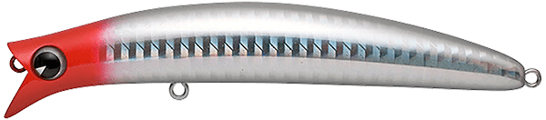
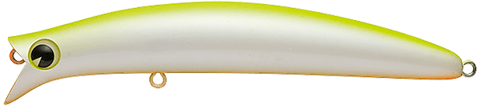
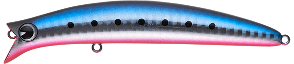
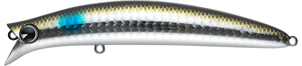

コモモII
（komomoII）
コモモIIはima（アイマ）のフローティングミノーです。
特徴的なヘッド形状から生まれる激しいアクションで、水面直下をかき回すモデル。デッドスローではハイピッチなローリング、スローではワイドなスネーキングアクションに変わり、水面を意識した活性の高いシーバスに強くアピールします。

画像出典:ima公式HP
スペック
- メーカー
- ima（アイマ）
- タイプ
- フローティング
- 全長
- 110mm
- 自重
- 15g
- レンジ
- 0〜20cm
- フック
- #3
- リング
- #3
- アクション
- ローリング＋ウォブリング
- ターゲット
- シーバス
- 価格
- 2,420円
▼今すぐチェック
コモモIIの特徴
水面直下を強くかき回す、コモモの名を継ぐスネーキングミノー
-
速度で変わる2つのアクション
デッドスローではハイピッチなローリング、スローではワイドなスネーキングアクション。巻き速度で見せ方を変えられます。
-
水面直下0〜20cmをキープ
レンジは0〜20cm。水面を意識した魚に、引き波を立てながら強くアピールできます。
-
大型フックで掛けてからも安心
#3の大型フックを2本搭載。ヒラスズキや大型のシーバスが掛かっても安心してやり取りできます。
コモモIIの使い方
基本はスローのただ巻き。ゆっくり巻くと水面直下をワイドなスネーキングで泳ぎ、引き波を立てながら誘えます。
さらに巻きを遅くすると、ハイピッチなローリングに変化。ペンシルやポッパーに反応がないとき、少しレンジを下げたトップ系として使うのも効果的です。
コモモIIの得意な状況
晩秋の大きく育ったボラや落ち鮎のパターン、サラシの薄い磯のヒラスズキゲーム。ベイトが水面近くに浮いていて、強めのアクションで誘いたいときに向いています。
ワンポイント
もっとナチュラルに見せたいときはコモモSF-125に、もっと強く水面を引き波で誘いたいときはウェイクベイトに持ち替えると、ローテーションが組みやすくなります。
コモモシリーズの使い分け
| モデル | 全長／自重 | 得意な場面 |
|---|---|---|
| コモモSF-125 | 125mm／18g | レンジ5〜50cm。シリーズの基準となるシャローランナー |
| コモモ125カウンター | 125mm／22g | レンジ30〜60cm。アクションを抑えた海水サスペンド |
| コモモSF-155 | 155mm／25g | レンジ5〜50cm。シリーズ最大のシルエットで大型ベイトに |
| コモモ155カウンター | 155mm／29g | レンジ15〜60cm。SF-155より控えめなアクションで速い流れに |
| コモモII | 110mm／15g | レンジ0〜20cm。水面直下をスネーキングで強くかき回す（本記事のモデル） |
コモモは、ナチュラルに泳ぐ「SF」、アクションを抑えた「カウンター」、水面直下を強く誘う「II」で性格が分かれます。ベイトの大きさでサイズを、流れの強さやベイトの元気さでタイプを選ぶのが基本です。
人気カラー
公式ラインナップから4色を紹介します（カラー名は公式の表記のまま）。

レッドヘッド定番のレッドヘッド。濁りやナイトゲームでの基準カラーに。

チャートバックパールチャートの背中で視認性が高いカラー。濁りやローライトに。

マコイワシイワシを意識したナチュラルカラー。カタクチが入ったときに。

ボラボラを意識したナチュラルカラー。晩秋のボラパターンに。
画像出典:ima公式HP
コモモIIに似ているルアー
-
 コモモSF-125
ima
詳細はこちら＞
コモモSF-125
ima
詳細はこちら＞
全長125mm・自重18gのシャローランナー。同じコモモで、もっとナチュラルに見せたいときに。
-
 キリンジ120
メガバス
詳細はこちら＞
キリンジ120
メガバス
詳細はこちら＞
全長120mm・自重21gのウェイクベイト。水面の引き波でもっと強く誘いたいときに。
-
 カゲロウ124F
メガバス
詳細はこちら＞
カゲロウ124F
メガバス
詳細はこちら＞
全長124mm・自重22gのシャローランナー。同じ表層レンジを、飛距離を出して探りたいときに。